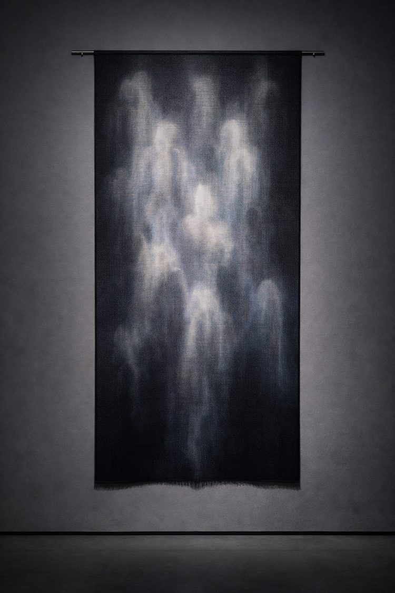
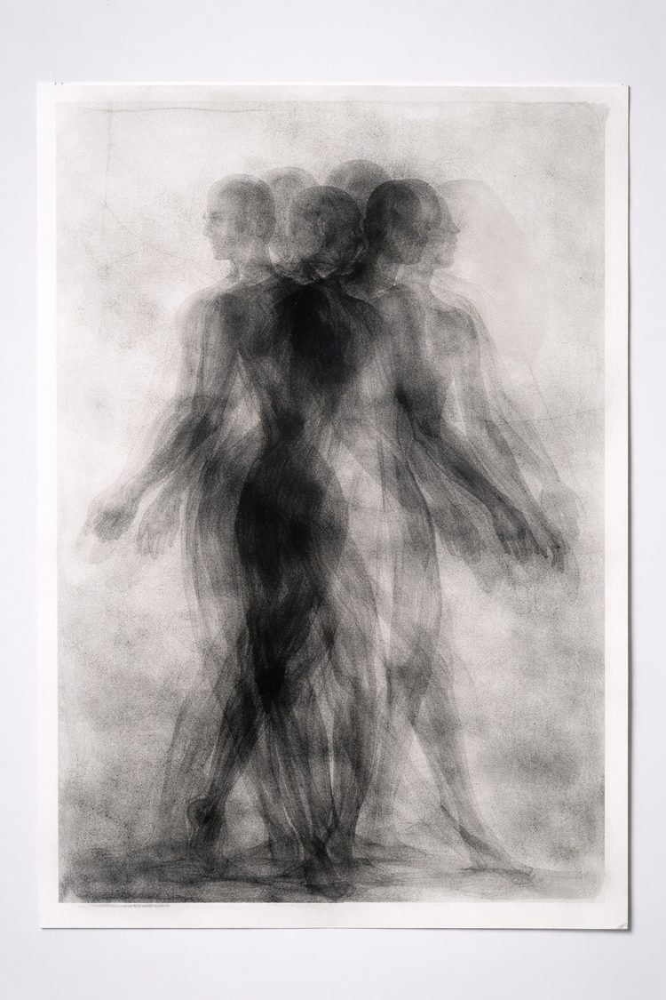
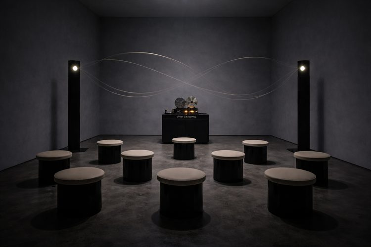
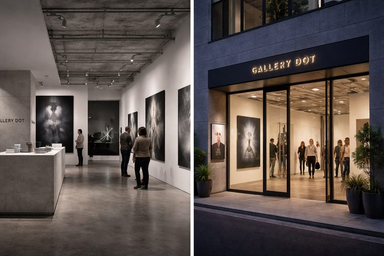

Yui Orihara
折原 柚衣
光学プリント／残像表現
《Afterglow #07》2025, ラムダプリント＋UVレジン
《Blind Spot》2024, ピグメントプリント
© Yui Orihara / Courtesy of GALLERY DOT
GALLERY DOT 10th Anniversary
2026.1.10 — 1.26
神宮前 / 12:00–19:00 / 火休
各日40個限定・なくなり次第終了
LINEで最新情報を受け取るExhibition Concept
光が去ったあとにだけ、浮かびあがる像がある。
GALLERY DOTが10年で出会った作家たちの新作・未公開作を通して、記憶と物質が交わる瞬間を見つめます。
Artists & Works
Yui Orihara
光学プリント／残像表現
《Afterglow #07》2025, ラムダプリント＋UVレジン
《Blind Spot》2024, ピグメントプリント
© Yui Orihara / Courtesy of GALLERY DOT
NORI
キネティック彫刻
《Echo Pendulum》2025, ステンレス・磁石・モーター
© NORI / Courtesy of GALLERY DOT

Rin Saeki
デジタル織物（テキスタイル×生成アルゴリズム）
《weave_ghost 3》2025, ジャカード織（シルク/和紙）
© Rin Saeki / Courtesy of GALLERY DOT

Hanna K.
版画／モノタイプ
《Residual Bodies》2023, モノタイプ＋グラファイト
© Hanna K. / Courtesy of GALLERY DOT

Naoto Sakai
サウンド・インスタレーション
《After Silence》2025, 定在波スピーカー・テープループ
ルームBにて／入場10名・15分入替制／撮影不可
© Naoto Sakai / Courtesy of GALLERY DOT
Special Gift
Talk & Performance
1月11日（日）17:00–18:15
佐伯奈央 × 水野圭太 × 久保田ミオ
要事前予約 / 定員40名
1月17日（土）18:00–19:00
森本紗英 × 高橋凌 / 司会：佐伯奈央
要事前予約 / 定員35名（展示来場予約者優先）
1月24日（土）16:00–17:00
参加アーティスト3名によるリレートーク
予約推奨（当日参加可）/ 定員50名
1月18日（日）18:30–19:10
NOA ISHIKAWA × KEN OTOMO
要事前予約 / 定員30名 / 時間帯別入場制
1月25日（日）17:30–18:00
牧村澪 × 映像参加：井上湊
予約不要・当日観覧可（混雑時入場制限あり）
Schedule
Access
〒150-0001
東京都渋谷区神宮前 1-2-3 DOT BLDG 1F
Reservation
予約完了後、予約番号とQRコードをメールでお送りします。当日入口でご提示ください。
ご登録のメールアドレスに予約番号とQRコードをお送りします。当日入口にてご提示ください。
Gallery

2016年の開廊以来、写真・映像・テキスタイル・彫刻など多様なメディアを横断する現代アートを紹介してきたGALLERY DOT。東京・神宮前を拠点に、若手作家の支援プログラム、国際アートフェアへの出展、企業コレクション向けキュレーションなどを通じ、アートと社会をつなぐ場をつくり続けています。
FAQ
混雑時は予約優先・入場制限があります。特典は事前予約来場者のみに進呈されます。
特典は予約者本人のみです。同伴者（最大2名）は入場できますが、マグカップの進呈はありません。
前日18:00まで、予約確認メール内の「予約変更」リンクから可能です。無断キャンセルが一定回数を超えた場合、以後の予約をお断りする場合があります。
当日中であれば、受付でスタンプを提示することで再入場できます。
可能です。未就学児は保護者が手をつなぐなど、安全への配慮をお願いします。
静止画のみ可（フラッシュ不可・動画不可）。撮影不可の掲示がある作品は全撮影禁止です。作品から50cm以上離れてご鑑賞ください。
Terms & Privacy
各日限定40個 ／ なくなり次第終了
GALLERY DOT 10th Anniversary "AFTER IMAGE"
2026.1.10 — 1.26